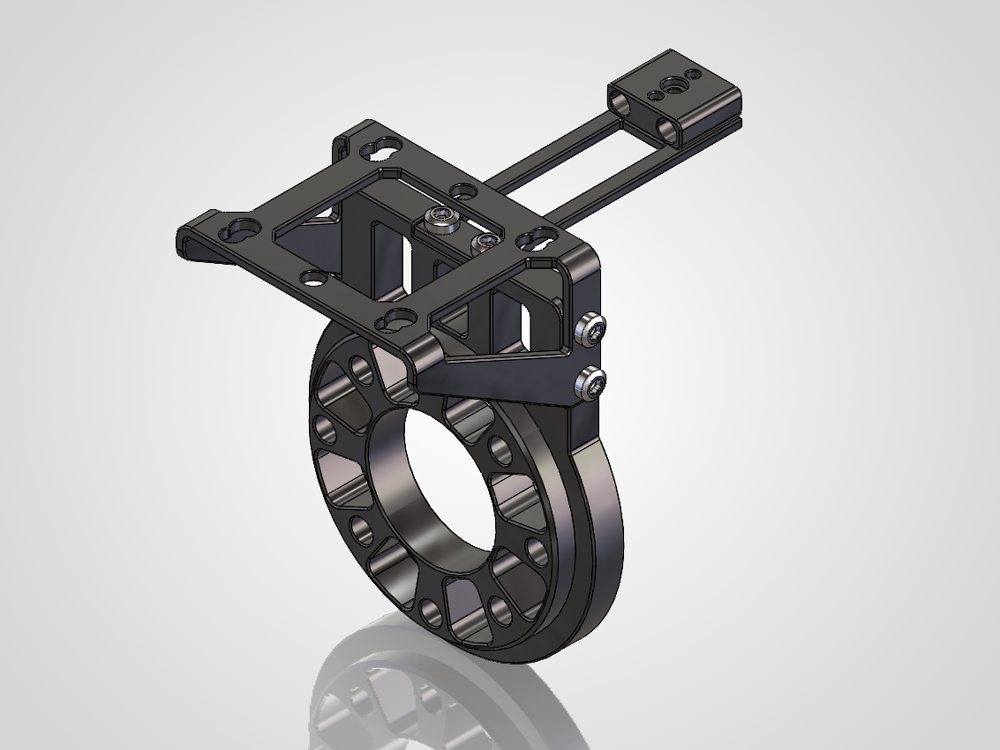
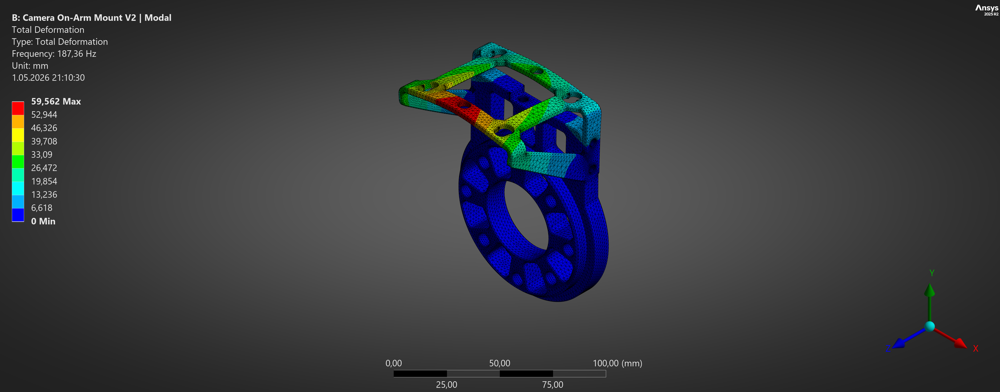
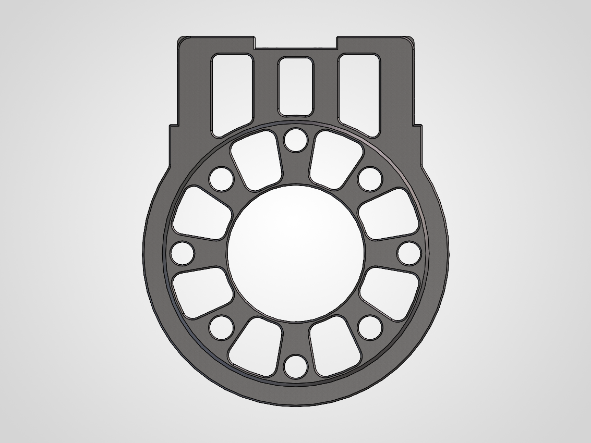
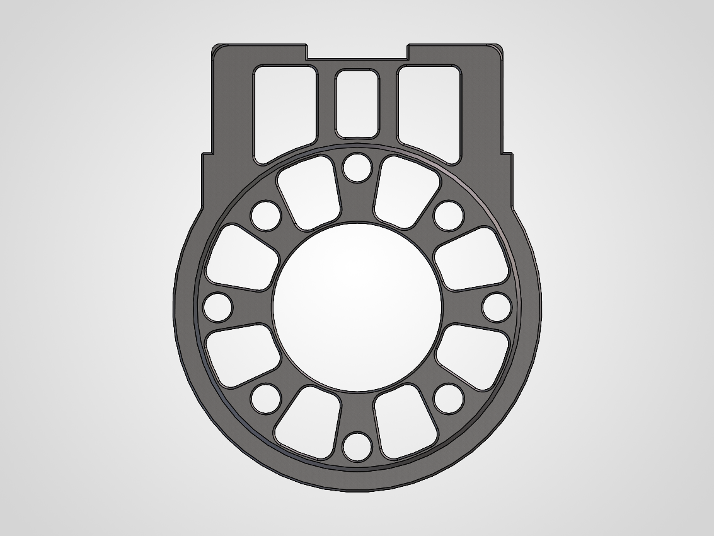
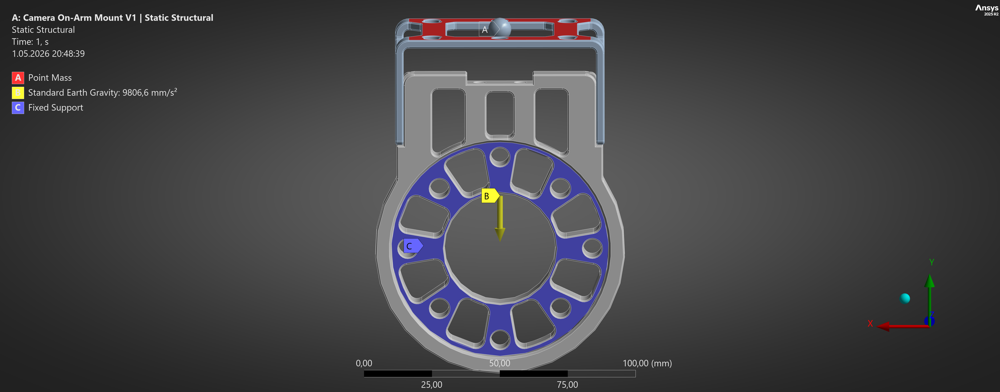
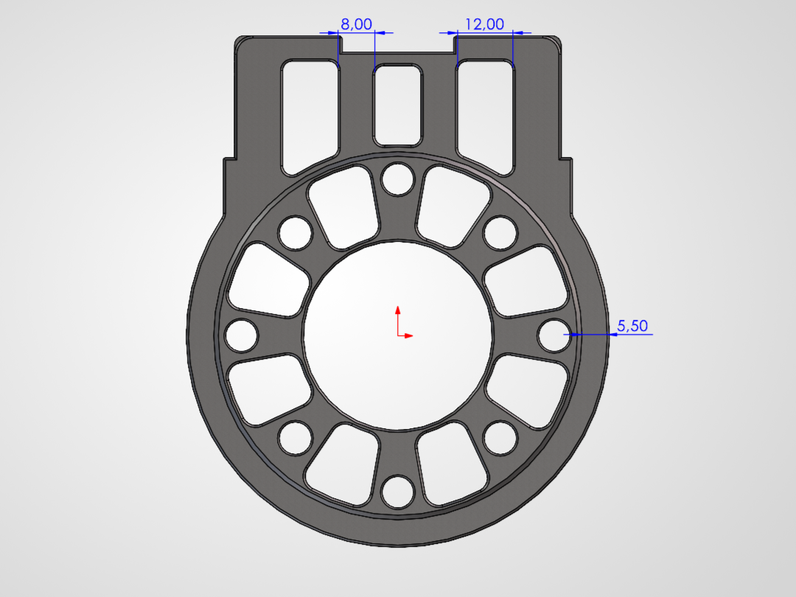
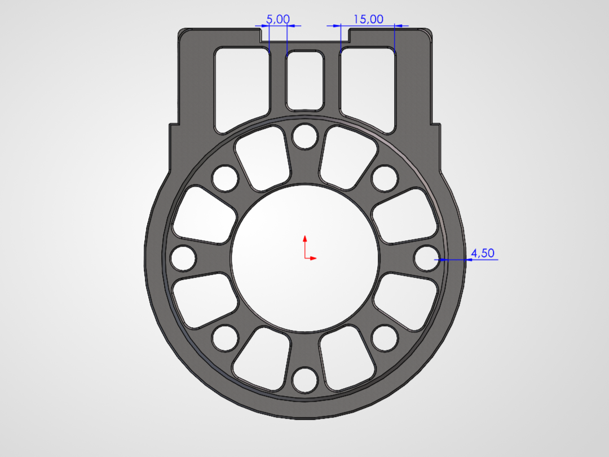
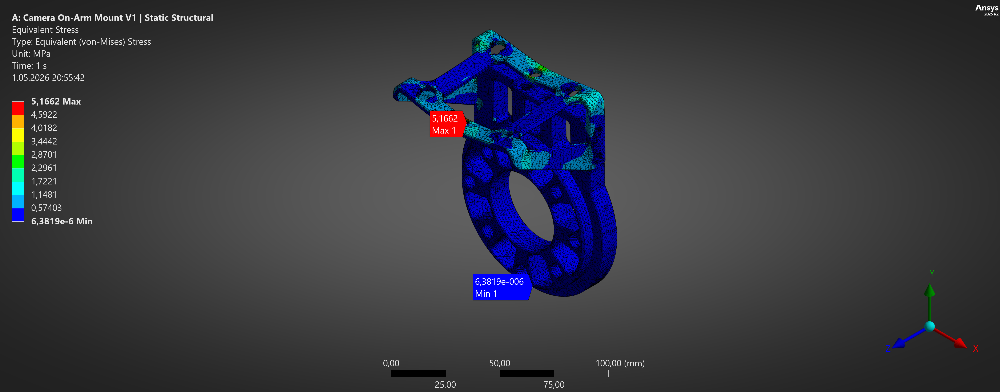
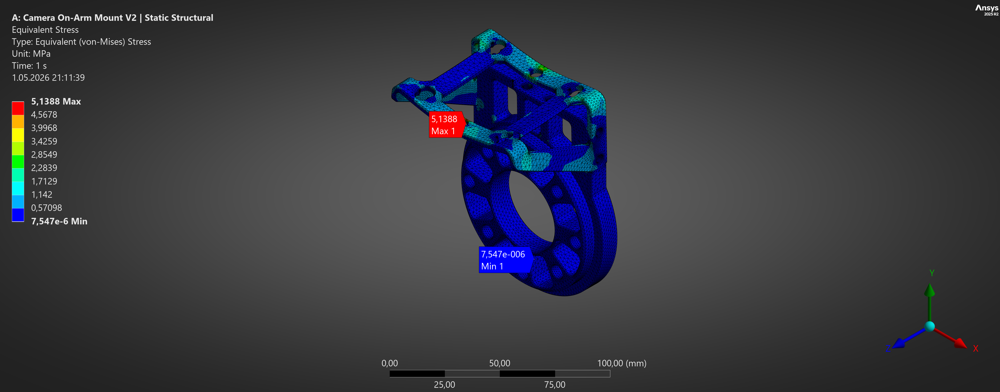
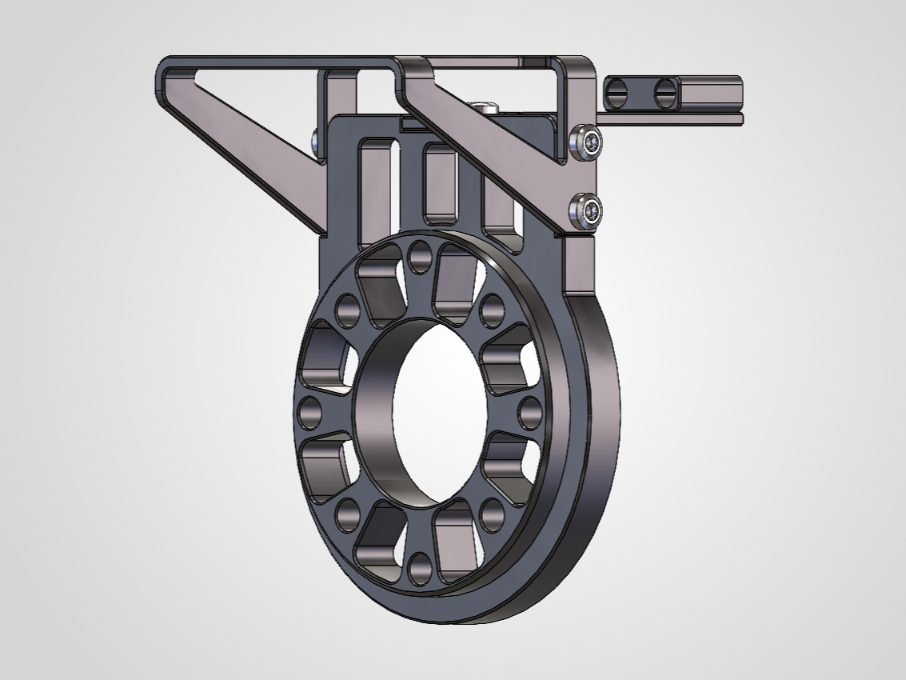

Mechanical Engineer | Mechanical Design & CAE
FEA | SolidWorks | Ansys | Optimization | Automation | Robotics

This project focused on a camera on-arm mount used to connect a machine vision camera to a robot arm. The study included the robot adapter and camera bracket assembly. A baseline model V1 was analysed first, and then a lighter version of the robot adapter V2 was developed and checked again with the same analysis approach. The aim was to reduce mass without creating a clear penalty in stress, deformation, or modal behaviour.

Tools: SolidWorks, ANSYS Mechanical
Reference Model: Zivid OA211: ISO 63
The main goal was to check whether the mount was structurally safe under the camera load and whether a lighter adapter could keep similar performance. The design change was limited to the robot adapter. The camera bracket was kept unchanged.

V1 Baseline

V2 Final Iteration
The model was analysed in ANSYS Mechanical using a concept-level setup. The camera mass was defined as 1 kg based on the Zivid 2+ M60 manufacturer datasheet and applied as a point mass at the camera mounting region. The robot-side mounting interface was fixed, and the contact between the adapter and the bracket was modelled as bonded. Static structural and modal analyses were used to compare the baseline and the final iteration.

Analysis Setup
| Item | Value |
|---|---|
| Material | Aluminum 6061-T6 |
| Analysed parts | Robot Adapter + Camera Bracket |
| Optimised part | Robot Adapter only |
| Camera representation | 1 kg point mass |
| Support condition | Fixed support at robot-side interface |
| Contact | Bonded contact between adapter and bracket |
| Analyses | Static Structural + Modal |
| Mesh strategy | 2 mm global mesh, 1 mm local sizing at support and contact regions |
The iteration focused on removing material from low-stress regions of the robot adapter while keeping the mounting features, support region, and bracket interface. In the final V2 geometry, the wall thickness of the main outer circular section was reduced from 5.5 mm to 4.5 mm. In the upper cutout region, the spacing between the central rectangular cutout and the two side cutouts was reduced from 8 mm to 5 mm. As a result, the widths of the left and right cutouts were increased from 12 mm to 15 mm, allowing more material to be removed from that area. These changes increased the size of existing cutouts and reduced mass without changing the overall mounting concept. The final V2 model was then solved again in static and modal analyses and compared directly with the V1 baseline.
V1 Baseline

V2 Final Iteration

Both versions showed very low stress and very small deformation under the applied load case. The highest stress stayed in the upper transition region of the mount, but the values remained low in both models. The final V2 design reduced adapter mass while keeping the static response almost unchanged.
Mass and Static Results
| Metric | V1 Baseline | V2 Final | Change |
|---|---|---|---|
| Robot Adapter Mass | 128.77 g | 119.30 g | -7.35% |
| Max von Mises Stress | 5.166 MPa | 5.139 MPa | -0.53% |
| Max Total Deformation | 0.01224 mm | 0.01235 mm | +0.93% |
V1 Baseline Equivalent (von-Mises) Stress Result

V2 Final Equivalent (von-Mises) Stress Result

The first three natural frequencies stayed close after the iteration. The first mode remained above 187 Hz, and the general mode shapes stayed similar to the baseline. This means the lighter adapter kept the main dynamic behaviour of the original design.
First Three Natural Frequencies
| Mode | V1 Baseline | V2 Final | Change |
|---|---|---|---|
| Mode 1 | 189.02 Hz | 187.36 Hz | -0.88% |
| Mode 2 | 236.26 Hz | 230.54 Hz | -2.42% |
| Mode 3 | 318.22 Hz | 316.03 Hz | -0.69% |
V1 Modal Analysis Result
V2 Final Modal Analysis Result
The final V2 design reduced the robot adapter mass by 7.35% while keeping stress, deformation, and the first natural frequency very close to the baseline. The stress level remained low, deformation changed only slightly, and the modal response stayed in the same range. Based on this comparison, the lightweight iteration improved mass efficiency without changing the overall structural behaviour.

Mechanical engineer focused on mechanical design, CAE, and engineering analysis. This portfolio showcases selected projects in FEA, simulation, optimization, and mechanical design, with applications in manufacturing, automation, and robotics.
Resume: Taylan Daldal
LinkedIn: linkedin.com/in/taylandaldal
Email: daldaltaylan@gmail.com